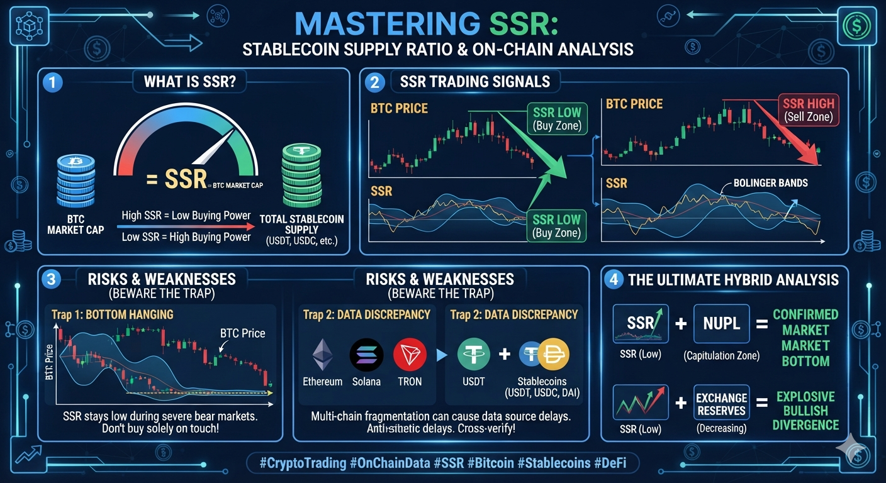

ビットコイン時価総額とステーブルコインの相関性を学ぶ
SSR（ステーブルコイン供給比率）は、暗号資産市場の「購買力」を可視化する究極のオンチェーンインジケーターです。
【SSRの計算式】
SSR = ビットコインの時価総額 ÷ ステーブルコインの総時価総額

市場が成熟するにつれ、SSRの基準値は大きく変化しています。最新のデータと過去の推移を比較し、現在の買い圧力がどの位置にあるかを理解しましょう。
| 年代 | 市場の状況とSSRの目安 |
|---|---|
| 2014-2016 | ステーブルコイン黎明期（計測不能または極高水準） |
| 2017-2021 | 市場拡大期（SSR: 10 〜 100超で激しく変動） |
| 2022-2025 | 機関投資家参入期（SSR: 5 〜 18の間で推移） |
| 2026年現在 | 歴史的ボトム圏（SSR: 約 4.2 〜 4.8） |
この下に「中編：オンチェーンデータの深い読み解き方」「後編：SSRを活用したトレーディング戦略」を縦スクロールで追加していきます。